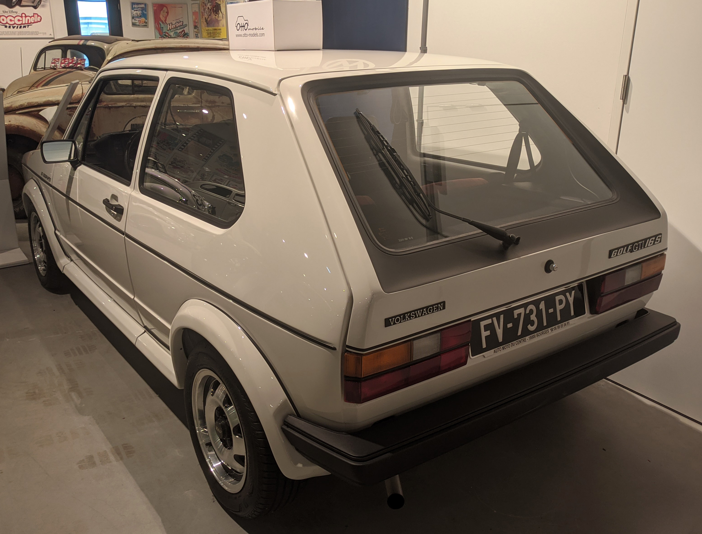
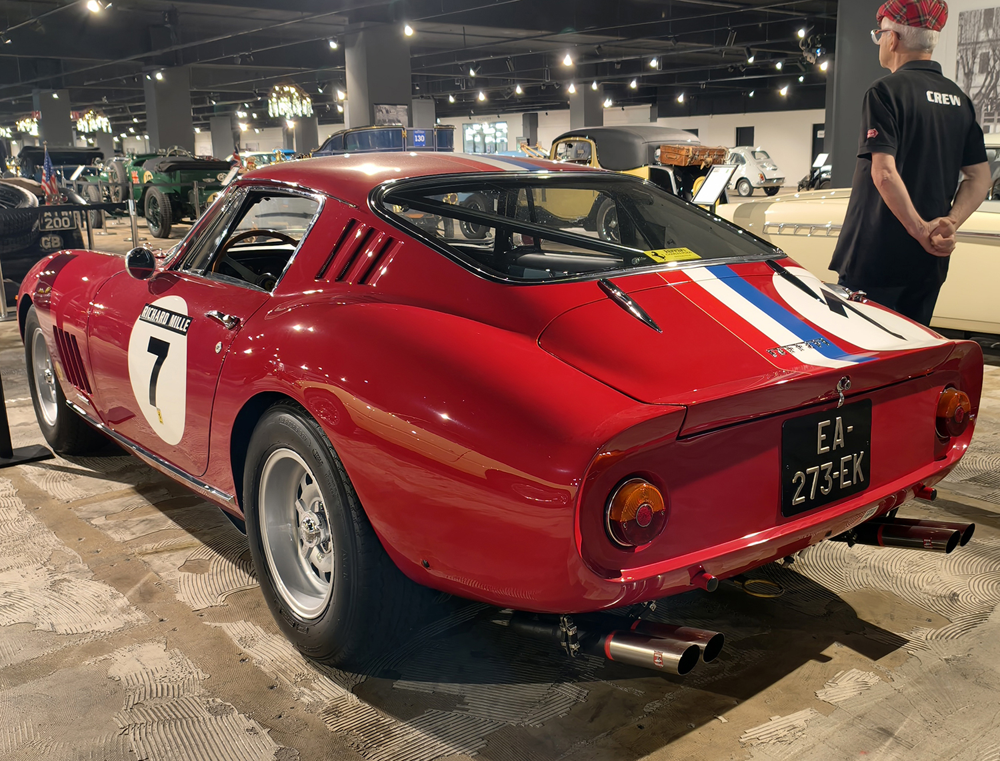
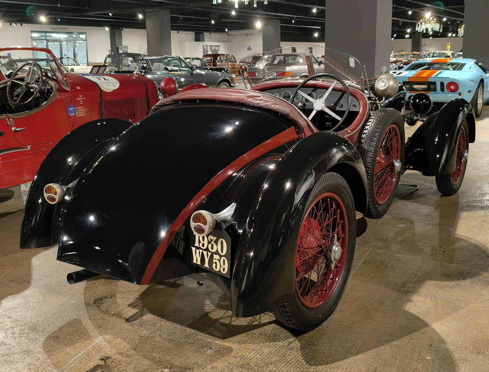

License Plates of
France (FR)
Photographed in The Netherlands


Normal series since 2009. 24 = Dordogne.


Normal series since 2009. Unofficial black eurobands. 92 = Hauts-de-Seine.


Normal series. 2B = Haute-Corse. Owners are allowed to choose their region code so this car might not actually be from Haute-Corse.


Normal series since 2009. 36 = Indre.


Normal series since 2009. 974 = Réunion. Owners are allowed to choose their region code so this car might not actually be from Réunion.

Normal series since 2009. Black plate = Oldtimer.

Normal series since 2009. Black plate = Oldtimer.


Normal from 1950 to 2009. 92 = Hauts-de-Seine. White front plates mandatory since 1993. Euroband optional since 1993 and mandatory since 2004.


Normal from 1950 to 2009. 51 = Marne. White front plates mandatory since 1993. Euroband optional since 1993 and mandatory since 2004.


Normal from 1950 to 2009. 67 = Bas-Rhin. White rear plates optional since 2007. Euroband optional since 1993 and mandatory since 2004.


Normal from 1950 to 2009. 85 = Vendée. Yellow rear plates mandatory 1993-2007. Euroband optional since 1993 and mandatory since 2004.


Normal from 1950 to 2009. 11 = Aude. This plate is either fake or deregistered.


Normal from 1950 to 2009. 03 = Allier. This plate is either fake or deregistered.


Normal from 1950 to 2009. 13 = Bouches-du-Rhône.


Normal from 1950 to 2009. 83 = Var.

Normal from 1950 to 2009. 59 = Nord.


Normal from 1901-1928. S = Saint-Étienne.


Normal from 1928-1950. HX = Loir-et-Cher.


Temporary series since 2004. WW = Temporary. 59 = Nord.


Temporary Transit series. 04/24 = Valid to April 2024. Same registration as the normal series.


Private vehicles of French Forces in Germany since 2016. RF = République française.